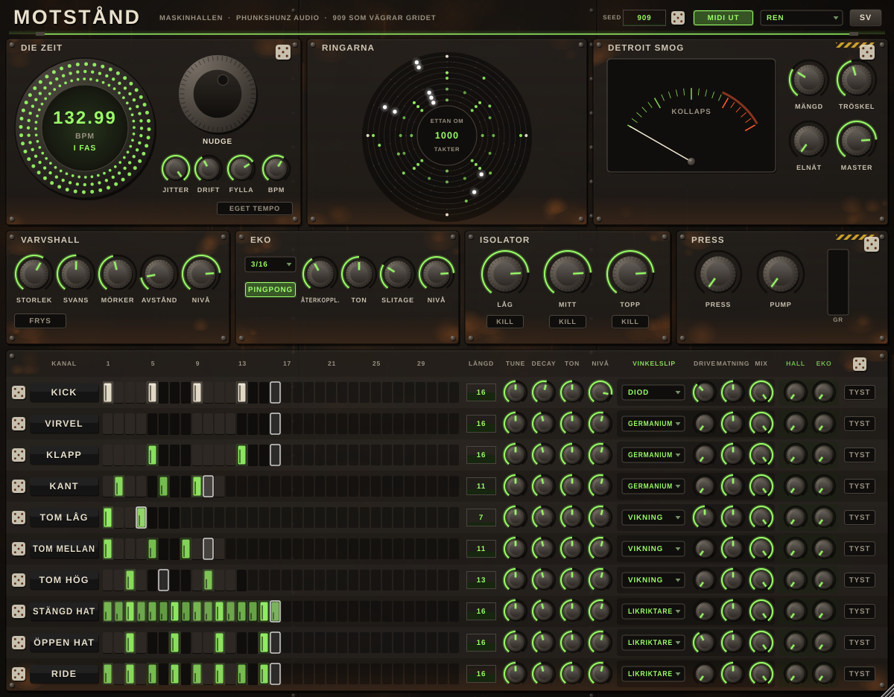

A 909 that refuses the grid. MOTSTÅND (Swedish for resistance) synthesises every sound itself and plays it the way Jeff Mills plays a 909 live: a clock that drifts and has to be pushed back, loops of different lengths that hunt for the one, cymbals that never hit the same way twice, and a master bus that chokes when too much hits at once.
En 909 som vägrar gridet. MOTSTÅND gör alla ljud själv och spelar dem som Jeff Mills spelar en 909 live: en klocka som glider och måste knuffas tillbaka, loopar med olika längd som letar efter ettan, cymbaler som aldrig slår likadant två gånger, och en master-buss som kollapsar när för mycket slår samtidigt.

Double-click the zip in Downloads. Open Terminal and run:
Dubbelklicka på zip-filen i Hämtade filer. Öppna Terminal och kör:
bash ~/Downloads/MOTSTAND/installera.command
The plugin is not signed with an Apple certificate, so macOS blocks it. The script removes that block. Works on Intel and Apple Silicon, macOS 11 Big Sur and later.
Pluginet är inte signerat med ett Apple-certifikat, så macOS spärrar det. Skriptet tar bort spärren. Fungerar på Intel och Apple Silicon, macOS 11 Big Sur och senare.
Right-click the zip and choose Extract All. Double-click installera.bat and say yes when Windows asks for permission.
Högerklicka på zip-filen och välj Extrahera alla. Dubbelklicka på installera.bat och svara ja när Windows frågar om lov.
unzip MOTSTAND-Linux.zip && bash MOTSTAND/installera-linux.sh
Then restart your DAW, or rescan plugins (Bitwig: Settings › Locations › Plug-ins › Rescan). MOTSTÅND is an instrument: look for MOTSTAND under instruments / drums.
Starta sedan om din DAW, eller sök efter nya plugins (Bitwig: Settings › Locations › Plug-ins › Rescan). MOTSTÅND är ett instrument: leta efter MOTSTAND bland instrument / trummor.
The first time you open MOTSTÅND it asks for the licence key from your purchase (it looks like XXXX-XXXX-XXXX-XXXX). Paste it and press UNLOCK. You only do this once: every MASKINHALLEN machine on the computer finds the key. A bundle key unlocks every machine. Until it is unlocked, the full version stays silent.
Första gången du öppnar MOTSTÅND ber den om licensnyckeln från ditt köp (den ser ut så här: XXXX-XXXX-XXXX-XXXX). Klistra in den och tryck LÅS UPP. Det räcker en gång: alla MASKINHALLEN-maskiner på datorn hittar nyckeln. En bundle-nyckel låser upp alla maskiner. Tills den är upplåst är fullversionen tyst.
The clock that refuses the grid. It takes the DAW's tempo as a starting point and adds its own instability on top.
Klockan som vägrar gridet. Den tar DAW:ens tempo som utgångspunkt och lägger sin egen instabilitet ovanpå.
| Control | Reglage | What it does | Vad den gör |
|---|---|---|---|
| Strobe ring | Like the strobe dots on a turntable. Still dots = in phase. Crawling dots = drifting. The centre shows the tempo right now and how many milliseconds the machine is ahead or behind.Som strobe-prickarna på en skivspelare. Stilla prickar = i fas. Krypande prickar = maskinen glider. Mitten visar tempot just nu och hur många millisekunder maskinen ligger före eller efter. | ||
| NUDGE | Drag the wheel right to push the machine forward, left to hold it back (up to ±4 %). It springs back when you let go. Can be automated.Dra hjulet åt höger för att knuffa maskinen framåt, åt vänster för att hålla igen (upp till ±4 %). Fjädrar tillbaka när du släpper. Kan automatiseras. | ||
| JITTER | Loose hands: every step lands up to 0–1.5 ms off the grid.Lösa händer: varje steg landar upp till 0–1,5 ms från gridet. | ||
| DRIFT | The tempo wanders slowly (max ±1.5 %) and comes back by itself after a while.Tempot vandrar långsamt (max ±1,5 %) och kommer tillbaka av sig självt efter en stund. | ||
| FYLLA / DRUNK | An invisible hand on the decay and tune of every hit, strongest on the cymbals. No two hits sound exactly the same.En osynlig hand på decay och tune för varje slag, starkast på cymbalerna. Inga två slag låter exakt likadant. | ||
| EGET TEMPO / OWN TEMPO | On = ignore the DAW and use the BPM knob (90–160).På = strunta i DAW:en och använd BPM-ratten (90–160). |
Every channel that plays is a ring. The white light is the playhead. The kick runs on 16 steps, but toms and rim can run on 5, 7, 11 or 13 (set with LENGTH on each channel). The centre counts how many bars until every ring lands on the one at the same time, and flashes THE ONE! when it happens.
Varje kanal som spelar är en ring. Det vita ljuset är spelhuvudet. Kicken går på 16 steg, men toms och kant kan gå på 5, 7, 11 eller 13 (ställs med LÄNGD på varje kanal). Mitten räknar hur många takter det är tills alla ringar landar på ettan samtidigt, och blinkar ETTAN! när det händer.
On a real 909 the circuits choke when kick, open hat and ride hit at once. Here the bus is completely clean until more hits than the THRESHOLD land within one millisecond. Then it sags and smears. AMOUNT sets how hard. The needle shows the collapse. MAINS HUM adds a 50 Hz hum like a badly grounded workshop. MASTER is the output level.
På en riktig 909 kollapsar kretsarna när kick, öppen hat och ride slår samtidigt. Här är bussen helt ren tills fler slag än TRÖSKEL landar inom en millisekund. Då sjunker den ihop och smetar. MÄNGD styr hur hårt. Visaren visar kollapsen. ELNÄT lägger på ett 50 Hz-brum som i en dåligt jordad verkstad. MASTER är utnivån.
Every channel has two send knobs, HALL and EKO, that decide how much of it goes to these effects.
Varje kanal har två send-rattar, HALL och EKO, som bestämmer hur mycket av den som går till effekterna.
A reverb like an empty shipyard hall. SIZE, TAIL (0.3–12 s), DARK, PREDELAY (0–120 ms), LEVEL. FREEZE makes the hall ring forever. The kick is kept out of the hall so the low end stays tight.
En reverb som en tom varvshall. STORLEK, SVANS (0,3–12 s), MÖRKER, AVSTÅND (0–120 ms), NIVÅ. FRYS får hallen att ringa för evigt. Kicken hålls utanför hallen så att basen är tajt.
Tape echo, timed in 1/16 to 1/2 notes and following the machine's own drifting tempo. FEEDBACK goes up to 105 % (the tape keeps it under control), TONE, WEAR (wow, flutter, saturation), LEVEL, PING-PONG.
Tejpeko, i 1/16- till 1/2-noter, som följer maskinens eget glidande tempo. ÅTERKOPPLING går upp till 105 % (tejpen håller den i schack), TON, SLITAGE (wow, flutter, mättnad), NIVÅ, PINGPONG.
The three-band kill EQ of a DJ mixer. The start position (80 %) is flat. Turn down for less, up for a little more. KILL removes the band completely.
DJ-mixerns trebands kill-EQ. Startläget (80 %) är rakt. Vrid ner för mindre, upp för lite mer. KILL tar bort bandet helt.
PRESS is a one-knob bus compressor that sets its own level. PUMP lets every kick duck the rest of the machine. The GR bar shows how hard it squeezes.
PRESS är en bus-kompressor med en ratt som ställer nivån själv. PUMP låter varje kick ducka resten av maskinen. GR-stapeln visar hur hårt den trycker.
Everything here is off until you turn it up. The basic sound stays clean.
Allt här är av tills du vrider upp det. Grundljudet är rent.
| MULLER | Hard techno rumble: the kick is fed into a huge dark hall, filtered down to the lows, driven and ducked by the next kick. AMOUNT, DEPTH, FREQ, DIRT, PUMP.Hardtechno-muller: kicken matas in i en mörk jättehall, filtreras ner i basen, distas och duckas av nästa kick. MÄNGD, DJUP, FREKVENS, SMUTS, PUMP. |
| MOTOR V8 | A V8 with uneven firing, left bank in the left speaker, right bank in the right. GAS, RPM (500–7000), TONE, RATTLE (misfires).En V8 med ojämn tändföljd, vänster bank i vänster högtalare, höger bank i höger. GAS, VARV (500–7000), KLANG, RASSEL (feltändningar). |
| STORM + SIRENLARM | A sandstorm (SAND, SWEEP, COLOUR) and an air-raid siren far away in the hall.En sandstorm (SAND, SVEP, FÄRG) och ett flyglarm långt bort i hallen. |
| UNDERGÅNG | One red knob that pulls everything at once: Smog, Press, Pump, rumble, storm and VINKELSLIP on every channel. The level is compensated, so it gets heavier, not quieter.En röd ratt som drar upp allt på en gång: Smog, Press, Pump, muller, storm och VINKELSLIP på alla kanaler. Nivån kompenseras, så det blir tyngre, inte tystare. |
A–H: eight patterns. A new pattern starts on the next bar (the button blinks while it waits). COPY, PASTE, CLEAR work on the pattern on screen (PASTE right after CLEAR brings it back). Hold FILL to play the steps marked FILL.
A–H: åtta mönster. Ett nytt mönster börjar på nästa takt (knappen blinkar medan den väntar). KOPIERA, KLISTRA, RENSA gäller mönstret på skärmen (KLISTRA direkt efter RENSA tar tillbaka det). Håll inne FILL så spelar stegen som är märkta FILL.
| Edit mode | Läge | In the grid | I griden |
|---|---|---|---|
| HITSSLAG | Click = hit. Drag up/down = velocity. Drag sideways = draw more hits. Right click = accent / soft / off.Klick = slag. Dra upp/ner = styrka. Dra i sidled = fler slag. Högerklick = accent / mjuk / av. | ||
| CHANCECHANS | Drag up/down = chance in %. Right click = only with FILL / only without FILL.Dra upp/ner = chans i %. Högerklick = bara med FILL / bara utan FILL. | ||
| ROLLRULLE | Click = 1, 2, 3 or 4 hits inside the step. Right click = off.Klick = 1, 2, 3 eller 4 slag inne i steget. Högerklick = av. | ||
| TUNE / DECAY | Drag up/down = this step's own tune or decay. Double click = reset.Dra upp/ner = stegets egen tune eller decay. Dubbelklick = nollställ. |
In HITS mode the extras show as small marks: dots = roll, yellow corner = chance, red corner = FILL condition, dark square = tune/decay lock.
I SLAG-läget syns extras som små märken: prickar = rulle, gult hörn = chans, rött hörn = FILL-villkor, mörk ruta = tune/decay-lås.
Ten channels: KICK, SNARE, CLAP, RIM, TOM LOW/MID/HIGH, CLOSED HAT, OPEN HAT, RIDE. The closed hat chokes the open hat, like on a 909.
Tio kanaler: KICK, VIRVEL, KLAPP, KANT, TOM LÅG/MELLAN/HÖG, STÄNGD HAT, ÖPPEN HAT, RIDE. Den stängda haten stryper den öppna, som på en 909.
MIDI in plays the channels with the General MIDI drum map, also when the DAW is stopped. MIDI out sends the same notes on channel 10 (30 ms long), timing included, rolls included. Record it in your DAW to keep the Mills timing as MIDI.
MIDI in spelar kanalerna med General MIDI-trumkartan, även när DAW:en står still. MIDI ut skickar samma noter på kanal 10 (30 ms långa), med timingen och rullarna. Spela in det i din DAW så har du Mills-timingen som MIDI.
| Channel | Kanal | MIDI |
|---|---|---|
| KICK | 36 (C1), 35 | |
| SNARE | VIRVEL | 38, 40 |
| CLAP | KLAPP | 39 |
| RIM | KANT | 37 |
| TOM LOW / MID / HIGH | TOM LÅG / MELLAN / HÖG | 41, 43 / 45, 47 / 48, 50 |
| CLOSED / OPEN HAT | STÄNGD / ÖPPEN HAT | 42, 44 / 46 |
| RIDE | 51, 59 |
Besides the main MIX output, every channel has its own stereo output. They are only used when MULTI UT (right of the STUDIO / DOOM tabs) is on. With it off, everything stays in MIX, even if your DAW switches on all outputs by itself (Bitwig does). Turn MULTI UT on and activate an output in your DAW, and that channel leaves the MIX and goes out on its own: with VINKELSLIP and MASTER, but without Detroit Smog, PRESS and ISOLATOR.
Utöver huvudutgången MIX har varje kanal en egen stereoutgång. De används bara när MULTI UT (till höger om flikarna STUDIO / UNDERGÅNG) är på. När den är av ligger allt i MIX, även om din DAW slår på alla utgångar själv (det gör Bitwig). Slå på MULTI UT och aktivera en utgång i din DAW, så lämnar kanalen MIX och går ut för sig själv: med VINKELSLIP och MASTER, men utan Detroit Smog, PRESS och ISOLATOR.